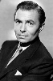

Country:United States, 183 minutes
Spoken languages:
Genres:Horror, Mystery
Director(s):Tobe Hooper
Writer(s):Stephen King
Video Codec:Unknown
Number: 2583


Certification:R
Storyline:
A novelist and a young horror fan attempt to save a small New England town which has been invaded by vampires. This version contains the original unedited miniseries (without commercials) but it edits out the end credits of part 1, a preview of what would happen in part 2, a lengthy recap at the beginning of part 2, and the opening credits of part 2 (which were now shown at the beginning of part one as they have Reggie Nalder's name added to the cast list, which was not included in the original credits to part 1). So this version, instead of being presented in its original two-part format, is instead shown as a 3-hour long movie.
Cast: 


Medium: Bluray,
Loaned: No
Aspect ratio: Unknown